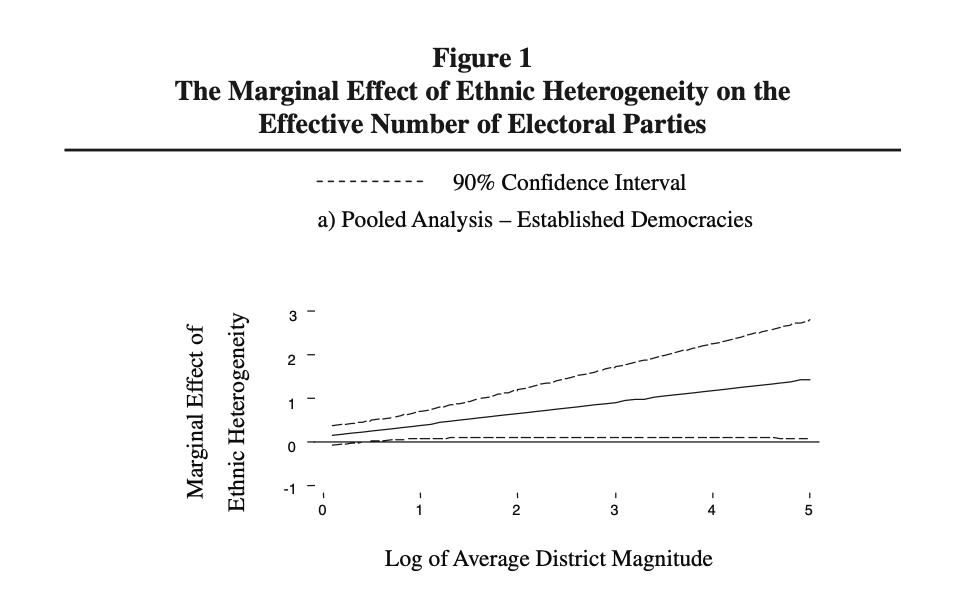
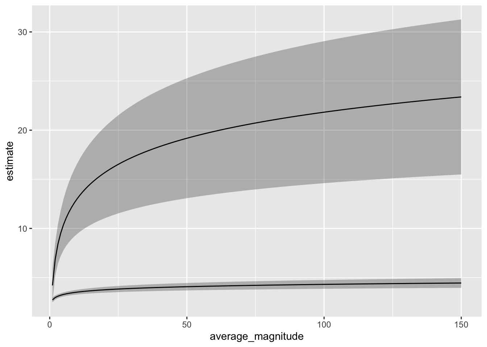
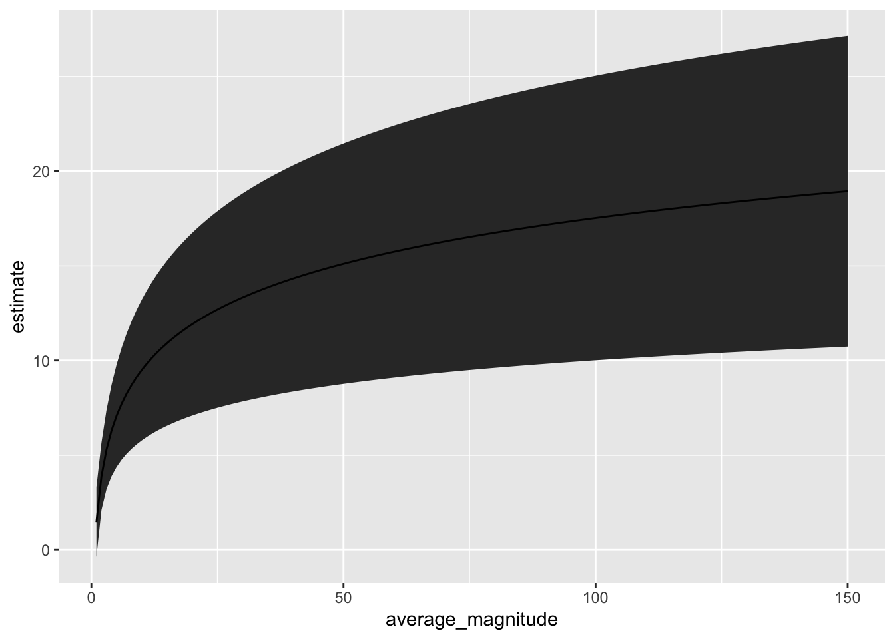
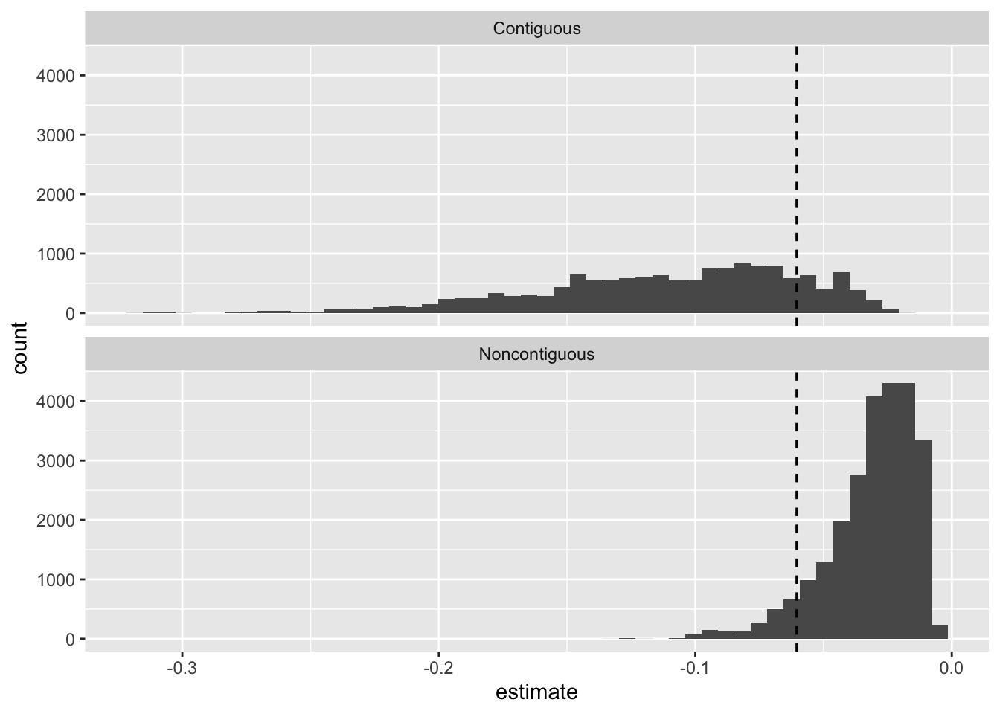

# load data
cg <- crdata::cg2006
# fit model; "Established Democracies 1946-2000" model in Table 2 on p. 698
f <- enep ~ eneg*log(average_magnitude) + eneg*upper_tier + en_pres*proximity
fit <- lm(f, data = cg)Week 5 Exercises
Complete solutions are available. Work each exercise before you open one.
Note: The important prospectus is due on Sep. 29.
Exercise 1 Clark and Golder (2006)
Use {marginaleffects} to reproduce the spirit of1 Figure 1 on p. 701 of Clark and Golder (2006, pdf), which shows the effect of the effective number of ethnic groups (ENEG) on the effective number of electoral parties (ENEP) as district magnitude varies.

The R code below gets you started.
- Use
predictions()to plot the expected ENEP as district magnitude varies from 1 to 150, once with ENEG at its minimum and once with ENEG at its maximum. (Setupper_tier = 0.) Interpret. - Use
comparisons()to plot the effect of moving ENEG from its minimum to its maximum as district magnitude varies from 1 to 150. (Again, setupper_tier = 0.) How does this curve relate to the two curves in part 1?
Hint
For part 2, variables = list(eneg = "minmax") specifies the comparison and newdata = datagrid(...) builds the grid. See the Grid section of the notes.
Complete solution
Part 1
# expected enep for a range of magnitudes, at the min and max of eneg
ev <- predictions(fit,
newdata = datagrid(average_magnitude = 1:150,
eneg = range,
upper_tier = 0))
# plot
ggplot(ev, aes(x = average_magnitude, y = estimate,
ymin = conf.low, ymax = conf.high,
group = eneg)) +
geom_ribbon(alpha = 0.3) +
geom_line()
# expected values at magnitudes 1 and 150
ev |>
filter(average_magnitude %in% c(1, 150)) |>
select(average_magnitude, eneg, estimate, conf.low, conf.high)
Estimate 2.5 % 97.5 %
2.73 2.48 2.97
4.20 2.46 5.94
4.44 3.95 4.94
23.38 15.49 31.27datagrid() accepts a function as well as values, so eneg = range gives us the minimum (about 1.0) and the maximum (about 14.2) of ENEG. Then datagrid() crosses those two values with the 150 magnitudes, so ev has 300 rows.
Notice that the two curves start close together and fan out. With a single-member district (i.e., magnitude 1), the expected ENEP is about 2.7 at the minimum ENEG and about 4.2 at the maximum ENEG. At magnitude 150, the expected ENEP is about 4.4 at the minimum ENEG and about 23.4 at the maximum ENEG. Ethnic diversity has little relationship to the number of parties when district magnitude is small and a large relationship when district magnitude is large. This is Clark and Golder’s argument.
Part 2
The code below serves as a minimal example–I tried to keep it as simple as possible. There are many things you might choose to do differently or better.
# load packages
library(marginaleffects)
# compute first difference for a range of magnitudes
fd <- comparisons(fit,
variables = list(eneg = "minmax"),
newdata = datagrid(average_magnitude = 1:150,
upper_tier = 0))
# plot
ggplot(fd, aes(x = average_magnitude, y = estimate,
ymin = conf.low, ymax = conf.high)) +
geom_ribbon() +
geom_line()
# first differences at magnitudes 1 and 150
fd |>
filter(average_magnitude %in% c(1, 150)) |>
select(average_magnitude, estimate, conf.low, conf.high)
Estimate 2.5 % 97.5 %
1.48 -0.374 3.33
18.94 10.734 27.15The plot shows how the expected number of electoral parties (ENEP) changes when moving from the minimum to the maximum level of the effective number of ethnic groups (ENEG) as district magnitude varies from 1 to 150, fixing upper_tier = 0 and holding other covariates at their means. For each value of district magnitude, the coefficient estimates are used to calculate this first difference and 95% confidence interval.
Details
fd <- comparisons(fit,
variables = list(eneg = "minmax"),
newdata = datagrid(average_magnitude = 1:150,
upper_tier = 0))comparisons(fit, ...)calculates contrasts (differences in predictions) for a fitted model.variables = list(eneg = "minmax")specifies a discrete contrast: predict the outcome whenenegis set to its observed minimum, then to its observed maximum, and take the difference.newdata = datagrid(...)defines the evaluation dataset:average_magnitude = 1:150generates 150 rows, one for each magnitude value between 1 and 150.upper_tier = 0fixes to “no upper tier.”- All other covariates are set to their typical values (means in this case).
- For each row in this grid, the model is used to predict the outcome under
eneg = minandeneg = max, and their difference.
ggplot(fd, aes(x = average_magnitude, y = estimate,
ymin = conf.low, ymax = conf.high)) +
geom_ribbon() +
geom_line()The plot answers: “At each value of district magnitude between 1 and 150, in systems without an upper tier and other covariates at their mean, how much larger is the expected number of electoral parties in the most ethnically diverse setting compared to the least?” The solid line shows the estimated effect, and the ribbon shows the 95% confidence interval around that estimate.
This curve is the vertical distance between the two curves in part 1. At magnitude 1, the first difference is about 4.2 - 2.7 = 1.5. At magnitude 150, it’s about 23.4 - 4.4 = 18.9. comparisons() computes the two expected values, takes their difference, and uses the delta method to get the SE of that difference.
Note: Because this is a linear model, the “other covariates” only matter if they are included in interactions with variables of interest.
Exercise 2 Radean and Beger (2025)
Read the Introduction and Conclusion sections of Radean and Beger (2025, pdf). The authors make an important point. They argue that reporting only the average effect can be misleading; it can obscure the wide variation in effects across observed values. Instead, they advocate for a case-centered approach, where researchers compute and report effects for each observation.
Use the data and model from Russett and Oneal (2001) in the {crdata} package to illustrate the relative value of a single summary effect (e.g., the average difference across all observations) and the approach recommended by Radean and Beger (2025).
# load data
ro <- crdata::ro2001
# glm version of their gee on pp. 314
f <- dispute ~ allies + lcaprat2 + contiguity + dem.lo + logdstab + power
fit <- glm(f, family = "binomial", data = ro)
# example quantity of interest
avg_comparisons(fit, variables = list(dem.lo = c(-10, 10)))
Estimate Std. Error z Pr(>|z|) S 2.5 % 97.5 %
-0.0605 0.00272 -22.3 <0.001 362.3 -0.0658 -0.0552
Term: dem.lo
Type: response
Comparison: 10 - -10In Week 4, we used the invariance property and the delta method to compute the first difference as dem.lo moves from -10 to 10, fixing lcaprat2 and logdstab at their medians and allies, contiguity, and power at their reference levels. The code below repeats that computation by hand.
# load packages
library(numDeriv)
# function to compute the first difference
fd_fn <- function(beta, hi, lo) {
plogis(hi%*%beta) - plogis(lo%*%beta)
}
# make X_lo
X_lo <- cbind(
"constant" = 1, # intercept
"allies" = 0,
"lcaprat2" = median(ro$lcaprat2, na.rm = TRUE),
"contiguity" = 0,
"dem.lo" = -10,
"logdstab" = median(ro$logdstab, na.rm = TRUE),
"power" = 0
)
# make X_hi by modifying the relevant value of X_lo
X_hi <- X_lo
X_hi[, "dem.lo"] <- 10
# invariance property
fd_hat <- fd_fn(coef(fit), X_hi, X_lo)
# delta method
grad <- grad(
func = fd_fn,
x = coef(fit),
hi = X_hi,
lo = X_lo)
se_fd_hat <- sqrt(grad %*% vcov(fit) %*% grad)
# estimated fd and se
c(fd_hat, se_fd_hat)[1] -0.049019410 0.004235749- Compute the same first difference with
comparisons()anddatagrid(). Does your estimate match the by-hand estimate above? Does your SE match the by-hand SE? - Use
comparisons()to compute this first difference for every dyad-year in the data. Make one figure that shows the distribution of these first differences. In one paragraph, compare this distribution to the single summary fromavg_comparisons(). What information does the single summary leave out?
Hint 1
In the by-hand code, a 0 for allies, contiguity, and power means the reference level (i.e., the first level, which levels(ro$allies) shows). datagrid() accepts a function as well as a value, so lcaprat2 = median sets lcaprat2 to its median.
Hint 2
For part 2, leave out newdata. Without newdata, comparisons() returns one first difference for each row of the data.
Complete solution
Part 1
comparisons(fit,
variables = list(dem.lo = c(-10, 10)),
newdata = datagrid(lcaprat2 = median,
logdstab = median,
allies = "Allies",
contiguity = "Contiguous",
power = "At Least One Great Power"))
lcaprat2 logdstab allies contiguity power Estimate
2.83 8.04 Allies Contiguous At Least One Great Power -0.049
Std. Error z Pr(>|z|) S 2.5 % 97.5 %
0.00424 -11.6 <0.001 100.5 -0.0573 -0.0407
Term: dem.lo
Type: response
Comparison: 10 - -10The estimates and the SEs match the by-hand computation: about \(-0.049\) with an SE of about 0.004. {marginaleffects} uses the same invariance property and delta method that we used by hand in Week 4.
Part 2
Answers will vary. Here’s one version.
# first difference for every dyad-year
fd <- comparisons(fit, variables = list(dem.lo = c(-10, 10)))
# average first difference
avg_fd <- avg_comparisons(fit, variables = list(dem.lo = c(-10, 10)))
avg_fd
Estimate Std. Error z Pr(>|z|) S 2.5 % 97.5 %
-0.0605 0.00272 -22.3 <0.001 362.3 -0.0658 -0.0552
Term: dem.lo
Type: response
Comparison: 10 - -10# summarize the distribution of first differences
quantile(fd$estimate, c(0, 0.5, 1)) 0% 50% 100%
-0.318673406 -0.040727341 -0.004673395 # plot the distribution, w/ the average as a vertical line
ggplot(fd, aes(x = estimate)) +
facet_wrap(vars(contiguity), ncol = 1) +
geom_histogram(bins = 50) +
geom_vline(xintercept = avg_fd$estimate, linetype = "dashed")
The average first difference is about \(-0.06\). But the first differences for individual dyad-years range from about \(-0.32\) to about \(-0.005\). The single summary doesn’t show that the effect of democracy depends heavily on the baseline risk of a dispute.
I split the figure by contiguity because neighbors have a much higher baseline risk. For contiguous dyads, most of the first differences are larger than the average. For noncontiguous dyads, most are smaller.
Exercise 3 Zero-inflated negative binomial
Suppose a zero-inflated negative binomial model gives an observation a probability of a structural zero \(\pi = 0.25\), a negative binomial mean \(\mu = 4\), and an overdispersion parameter \(\theta = 0.5\). For the negative binomial part, the probability of a zero is \(f(0; \mu, \theta) = \left(\frac{\theta}{\theta + \mu}\right)^\theta\).
- By hand, compute \(\Pr(y = 0)\) for this observation. How much of this probability comes from structural zeros? How much comes from the negative binomial part?
- By hand, compute \(E(y)\) for this observation. Why isn’t \(E(y)\) equal to \(\mu\)?
- Copy the code from the zero-inflation chapter of the notes that fits
zinb2_fitto Holland’s Santiago data, and run it.predict(zinb2_fit, type = "zprob")returns \(\hat{\pi}_i\) andpredict(zinb2_fit, type = "conditional")returns \(\hat{\mu}_i\). Confirm thatpredictions(zinb2_fit)returns \((1 - \hat{\pi}_i)\hat{\mu}_i\).
Hint
There are two ways to get a zero. The observation can be a structural zero (with probability \(\pi\)). Or it can be a draw from the negative binomial (with probability \(1 - \pi\)) that happens to equal zero. See the pmf in the notes.
Complete solution
Part 1
First, compute the negative binomial part’s probability of a zero.
\[ f(0; \mu, \theta) = \left(\frac{0.5}{0.5 + 4}\right)^{0.5} = \left(\frac{1}{9}\right)^{0.5} = \frac{1}{3}. \]
Then add the two ways to get a zero.
\[ \Pr(y = 0) = \pi + (1 - \pi) f(0; \mu, \theta) = 0.25 + 0.75 \times \frac{1}{3} = 0.25 + 0.25 = 0.5. \]
So half of the probability (0.25) comes from structural zeros, and the other half (0.25) comes from the negative binomial part.
Part 2
\[ E(y) = \pi \times 0 + (1 - \pi) \mu = 0.75 \times 4 = 3. \]
\(E(y)\) doesn’t equal \(\mu\) because \(\mu\) is the mean of the negative binomial part only. A quarter of the time, the observation is a structural zero, which lowers the mean from 4 to 3.
Part 3
# load packages
library(glmmTMB)
# fit zinb2_fit from the notes
sant <- crdata::holland2015 |>
filter(city == "santiago")
f <- operations ~ lower + vendors + budget + population
zi_f <- ~ lower + vendors + budget + population
zinb2_fit <- glmmTMB(
formula = f,
ziformula = zi_f,
family = nbinom2,
data = sant
)
# the two parts of the model
pi_hat <- predict(zinb2_fit, type = "zprob")
mu_hat <- predict(zinb2_fit, type = "conditional")
# compare (1 - pi) * mu to predictions()
ev <- predictions(zinb2_fit)
tibble(by_hand = (1 - pi_hat)*mu_hat,
marginaleffects = ev$estimate) |>
head()# A tibble: 6 × 2
by_hand marginaleffects
<dbl> <dbl>
1 0.379 0.379
2 0.306 0.306
3 0.222 0.222
4 1.64 1.64
5 1.89 1.89
6 0.723 0.723The two columns are the same. {marginaleffects} works with \(E(y_i) = (1 - \hat{\pi}_i)\hat{\mu}_i\), which combines both parts of the model.
Exercise 4 Hultman, Kathman, and Shannon (2013)
Hultman, Kathman, and Shannon (2013, pdf) use a negative binomial regression model. Skim through their paper to understand the application and the variables. You can find out more about their data and useful details with ?crdata::hks2013.
- Fit two zero-inflated negative binomial models: one with constant zero inflation and one with zero inflation that depends on covariates \(Z\). The \(Z\) variables can be the same as the \(X\) or different. How many parameters (i.e., \(k\)) does each of the three models (the negative binomial model below and your two zero-inflated models) have? Check your counts against the
dfcolumn ofBIC(). - Use the BIC to compare the three models and convert the BICs to posterior model probabilities. How would Raftery (1995) describe the evidence? Does a zero-inflated negative binomial model better fit their data?
- Use
simulate()to simulate five fake data sets from the negative binomial model and five from your preferred zero-inflated model. Compare the fake data sets to the observed data. What do you notice? - Compute a substantively meaningful effect of UN troops on the number of civilians killed. How does the estimate for this quantity of interest from their negative binomial regression compare to the alternative models you consider?
For part 3, use simulate() rather than building the fake data sets by hand with rnbinom() (like we did for Holland’s data in Week 4). simulate() works for both MASS::glm.nb() and glmmTMB() fits, and it draws each fake observation from that observation’s own fitted distribution. To do this by hand for the zero-inflated model, you’d need a \(\hat{\pi}_i\) and a \(\hat{\mu}_i\) for every observation.
Warning
The MASS::glm.nb() model has a hard time converging for this data. See the control options that I use below for the negative binomial model.
# load data
hks <- crdata::hks2013
# estimate models
f <- osvAll ~ troopLag + policeLag + militaryobserversLag +
brv_AllLag + osvAllLagDum + incomp + epduration +
lntpop
# replicates model 1 in table 1 on p. 884 of HKS
fit <- MASS::glm.nb(f, data = hks,
init.theta = 5,
control = glm.control(epsilon = 1e-12,
maxit = 2500,
trace = FALSE))Hint 1
In glmmTMB(), ziformula = ~ 1 gives constant zero inflation and ziformula = ~ troopLag + ... lets it depend on covariates. The Information criteria section of the notes converts BICs to posterior probabilities. For part 4, compute the same quantity of interest from each fit with avg_comparisons(). troopLag is measured in thousands of troops, and most observations have none.
Hint 2
simulate(fit, nsim = 5) returns a data frame with one column per fake data set. These counts are so skewed that a histogram isn’t very useful. Instead, compare a few summaries (e.g., the share of zeros, the 90th percentile, and the maximum) of the observed data and each fake data set.
Complete solution
Part 1
# load packages
library(glmmTMB)
# zinb w/o covariates
fit_zi0 <- glmmTMB(f, ziformula = ~ 1, data = hks, family = nbinom2)
# zinb w/ same covariates as nb portion
fit_zi1 <- glmmTMB(f, ziformula = update(f, NULL ~ .), data = hks, family = nbinom2)The formula has eight covariates, so the negative binomial part has nine coefficients (i.e., eight slopes and an intercept).
- The negative binomial model has the nine coefficients plus \(\theta\), so \(k = 10\).
- The model with constant zero inflation adds one intercept for the zero inflation, so \(k = 11\).
- The model with covariates in the zero inflation adds nine coefficients for the zero inflation, so \(k = 9 + 9 + 1 = 19\).
The df column below confirms these counts.
Part 2
# compare
BIC(fit, fit_zi0, fit_zi1) |>
mutate(diff_min = BIC - min(BIC),
post_prob = exp(-0.5*diff_min)/sum(exp(-0.5*diff_min))) df BIC diff_min post_prob
fit 10 12602.59 1021.020 1.941904e-222
fit_zi0 11 12610.82 1029.249 3.172807e-224
fit_zi1 19 11581.57 0.000 1.000000e+00The BIC strongly prefers the zero-inflated model with covariates modeling the zero inflation. The difference is about 1,000, far above the threshold of 10 that Raftery (1995) describes as “very strong” evidence. The posterior probability of the zero-inflated model with covariates is essentially 1.
Notice that the model with constant zero inflation is worse than the negative binomial model by about 8. The estimated probability of a structural zero is essentially zero, so the model collapses to the negative binomial (just like the Santiago example in the notes). It fits the data exactly as well as the negative binomial, but it has one more parameter. The BIC adds \(\log(N) = \log(3{,}746) \approx 8.2\) for each parameter, so the constant zero inflation makes the BIC about 8 points worse.
Part 3
# simulate five fake data sets from each model
set.seed(1234)
nb_sims <- simulate(fit, nsim = 5)
zinb_sims <- simulate(fit_zi1, nsim = 5)
# a function to summarize a data set
summarize_counts <- function(y) {
c(pct_zero = round(100*mean(y == 0)),
median = median(y),
p90 = unname(quantile(y, 0.9)),
max = max(y))
}
# observed data
summarize_counts(hks$osvAll)pct_zero median p90 max
76 0 28 145844 # fake data from the nb model
t(sapply(nb_sims, summarize_counts)) pct_zero median p90 max
sim_1 76 0 16 7339049
sim_2 76 0 15 5200027745
sim_3 75 0 14 15037959
sim_4 76 0 14 3489999
sim_5 75 0 16 6536423# fake data from the zinb model w/ covariates
t(sapply(zinb_sims, summarize_counts)) pct_zero median p90 max
sim_1 78 0 28.0 46791
sim_2 78 0 29.5 65833
sim_3 78 0 31.5 88596
sim_4 77 0 38.0 696547
sim_5 78 0 41.0 8500262In the observed data, about three-quarters of the observations are zeros, the 90th percentile is 28, and the maximum is about 146,000.
Both models get the share of zeros and the median about right. But the negative binomial model produces a 90th percentile that’s too small (about 15) and maximums that are absurdly large (in the millions, and one above five billion!). The zero-inflated model does better. Its 90th percentiles are closer to the observed 28, and most of its maximums are in the tens of thousands. But it’s not perfect. It occasionally simulates an enormous count as well.
Part 4
We can use avg_comparisons() to compute the average change in expected civilian casualties as the number of UN troops (in 1000s) moves from 0 to its mean (\(\approx 0.7\)).
bind_rows(
"NB" = avg_comparisons(fit, variables = list(troopLag = c(0, .7))),
"constant ZINB" = avg_comparisons(fit_zi0, variables = list(troopLag = c(0, .7))),
"modeled ZINB" = avg_comparisons(fit_zi1, variables = list(troopLag = c(0, .7))),
.id = "model") |>
select(model, estimate, std.error) |>
tinytable::tt()| model | estimate | std.error |
|---|---|---|
| NB | -2159660.706 | 3028339.87 |
| constant ZINB | -2159686.294 | 3172687.72 |
| modeled ZINB | -1064.872 | 1302.41 |
For the negative binomial and zero-inflated negative binomial models with constant zero-inflation, we obtain absurdly large estimates and SEs. For the zero-inflated model with covariates, we get a reasonable estimate that increasing the troops from zero to their average level in the data decreases civilian casualties by about 1,000, give or take 1,300 or so.
These estimates make it clear that something weird is happening with these estimates. It turns out that there are some extremely large counts in these data.
summary(hks$osvAll) Min. 1st Qu. Median Mean 3rd Qu. Max.
0.00 0.00 0.00 69.54 0.00 145844.00 These extremely large counts push the overdispersion parameter very close to zero. When the overdispersion parameter is very close to zero, the negative binomial model can fit a few observations with enormous means. The largest fitted mean is about 2.2 billion, even though the largest observed count is about 146,000. These few observations account for most of the average first difference and its SE.
summary(fitted(fit)) Min. 1st Qu. Median Mean 3rd Qu. Max.
0.000e+00 2.000e+00 5.000e+00 5.908e+05 2.100e+01 2.199e+09 summary(fit)
Call:
MASS::glm.nb(formula = f, data = hks, control = glm.control(epsilon = 1e-12,
maxit = 2500, trace = FALSE), init.theta = 0.05919426018,
link = log)
Coefficients:
Estimate Std. Error z value Pr(>|z|)
(Intercept) -9.2367536 0.8750837 -10.555 <2e-16 ***
troopLag -0.5304466 0.0623706 -8.505 <2e-16 ***
policeLag -9.9025813 1.0421355 -9.502 <2e-16 ***
militaryobserversLag 21.7618688 1.3017670 16.717 <2e-16 ***
brv_AllLag 0.0007062 0.0005804 1.217 0.224
osvAllLagDum 2.1773614 0.1762377 12.355 <2e-16 ***
incomp 2.3793901 0.1871308 12.715 <2e-16 ***
epduration -0.0005591 0.0013581 -0.412 0.681
lntpop 0.7031066 0.0726654 9.676 <2e-16 ***
---
Signif. codes: 0 '***' 0.001 '**' 0.01 '*' 0.05 '.' 0.1 ' ' 1
(Dispersion parameter for Negative Binomial(0.0592) family taken to be 1)
Null deviance: 2862.1 on 3745 degrees of freedom
Residual deviance: 1834.7 on 3737 degrees of freedom
AIC: 12540
Number of Fisher Scoring iterations: 1
Theta: 0.05919
Std. Err.: 0.00228
2 x log-likelihood: -12520.30800 Modeling the zero-inflation allows the model to adequately capture the overdispersion while keeping \(\theta\) to a reasonable value (i.e., about 0.19 rather than 0.06).
summary(fit_zi1) Family: nbinom2 ( log )
Formula:
osvAll ~ troopLag + policeLag + militaryobserversLag + brv_AllLag +
osvAllLagDum + incomp + epduration + lntpop
Zero inflation:
~troopLag + policeLag + militaryobserversLag + brv_AllLag + osvAllLagDum +
incomp + epduration + lntpop
Data: hks
AIC BIC logLik -2*log(L) df.resid
11463.2 11581.6 -5712.6 11425.2 3727
Dispersion parameter for nbinom2 family (): 0.192
Conditional model:
Estimate Std. Error z value Pr(>|z|)
(Intercept) -4.2935574 0.9193441 -4.670 3.01e-06 ***
troopLag -0.2973410 0.0953140 -3.120 0.00181 **
policeLag -7.5250182 1.2462203 -6.038 1.56e-09 ***
militaryobserversLag 13.0225828 1.1210523 11.616 < 2e-16 ***
brv_AllLag 0.0003716 0.0002883 1.289 0.19749
osvAllLagDum 0.0637672 0.1839842 0.347 0.72890
incomp 1.9312583 0.2052217 9.411 < 2e-16 ***
epduration -0.0096235 0.0012134 -7.931 2.17e-15 ***
lntpop 0.5675410 0.0754177 7.525 5.26e-14 ***
---
Signif. codes: 0 '***' 0.001 '**' 0.01 '*' 0.05 '.' 0.1 ' ' 1
Zero-inflation model:
Estimate Std. Error z value Pr(>|z|)
(Intercept) 1.092e+01 1.233e+00 8.855 < 2e-16 ***
troopLag 1.460e-01 8.017e-02 1.821 0.0685 .
policeLag 3.739e+00 2.065e+00 1.811 0.0702 .
militaryobserversLag -4.416e+00 1.910e+00 -2.312 0.0208 *
brv_AllLag -2.320e-02 1.290e-02 -1.798 0.0722 .
osvAllLagDum -2.136e+01 1.382e+03 -0.015 0.9877
incomp -1.648e+00 2.520e-01 -6.541 6.12e-11 ***
epduration -8.083e-03 1.533e-03 -5.275 1.33e-07 ***
lntpop -5.962e-01 9.650e-02 -6.178 6.50e-10 ***
---
Signif. codes: 0 '***' 0.001 '**' 0.01 '*' 0.05 '.' 0.1 ' ' 1Exercise 5 de Kadt and Grzymala-Busse (2025)
Read pp. 16-18 (in Section 3.1) of de Kadt and Grzymala-Busse (2025, pdf). There (p. 17), they write:
If the researcher firmly believes they are not engaged in counterfactual reasoning—they purely want to ‘describe the data’—then the use of multivariate regression is itself a peculiar choice.
What do you make of their argument about multiple regression and control variables? Are control variables always about causal inference? Are control variables ever useful for description? Explain with one example (perhaps from your prospectus). Write two or three paragraphs (about 300 words).
Complete solution
No solution intended. Answers will vary.
Exercise 6 {marginaleffects}
Write your own one-page cheatsheet for the {marginaleffects} package. Organize it around the three choices in the notes (i.e., quantity, grid, and aggregation). At a minimum, your cheatsheet should describe predictions(), comparisons(), their avg_*() variants, and datagrid(), along with the arguments type, variables, comparison, newdata, and by.
Use Arel-Bundock, Greifer, and Heiss (2024, pdf) as a reference.2 You don’t need to read it cover to cover. Look up what you need for your cheatsheet.
For inspiration: What are the important functions? What are the important arguments? What are good default practices—and how do these deviate from {marginaleffects} defaults? You can stick closely to the perspective in the notes or deviate far from that perspective.
Complete solution
No solution intended. Answers will vary.
References
Arel-Bundock, Vincent, Noah Greifer, and Andrew Heiss. 2024. “How to Interpret Statistical Models Using Marginaleffects for R and Python.” Journal of Statistical Software 111 (9). https://doi.org/10.18637/jss.v111.i09.
Clark, William Roberts, and Matt Golder. 2006. “Rehabilitating Duverger’s Theory.” Comparative Political Studies 39 (6): 679–708. https://doi.org/10.1177/0010414005278420.
de Kadt, Daniel, and Anna Grzymala-Busse. 2025. “Good Description.” SocArXiv. https://doi.org/10.31235/osf.io/e74a9_v1.
Hultman, Lisa, Jacob Kathman, and Megan Shannon. 2013. “United Nations Peacekeeping and Civilian Protection in Civil War.” American Journal of Political Science 57 (4): 875–91. https://doi.org/10.1111/ajps.12036.
Radean, Marius, and Andreas Beger. 2025. “Not-so-Average After All: Individual Vs. Aggregate Effects in Substantive Research.” Journal of Peace Research. https://repository.essex.ac.uk/40373/.
Raftery, Adrian E. 1995. “Bayesian Model Selection in Social Research.” Sociological Methodology 25: 111. https://doi.org/10.2307/271063.
Russett, Bruce, and John R. Oneal. 2001. Triangulating Peace: Democracy, Interdependence, and International Organizations. New York: W. W. Norton & Company.
Footnotes
By “the spirit of,” I mean that you should feel free to change the mostly arbitrary features of the plot, like (1) the comparison (the authors use the instantaneous marginal effect), (2) the scale of the x-axis (the authors use the natural log), (3) the values of the other covariates, (4) average case or observed values, etc.↩︎
There is also a book at marginaleffects.com/chapters/who.html with lots of examples and case studies.↩︎